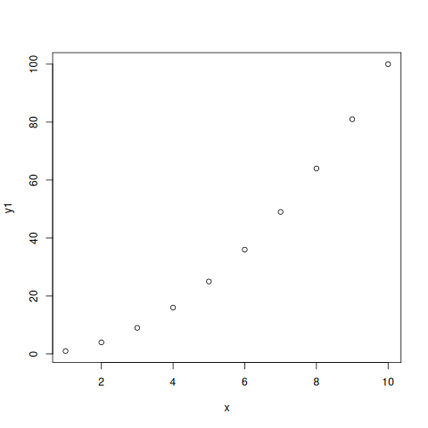
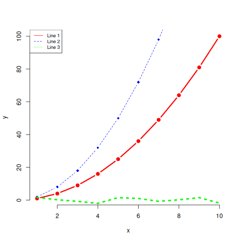
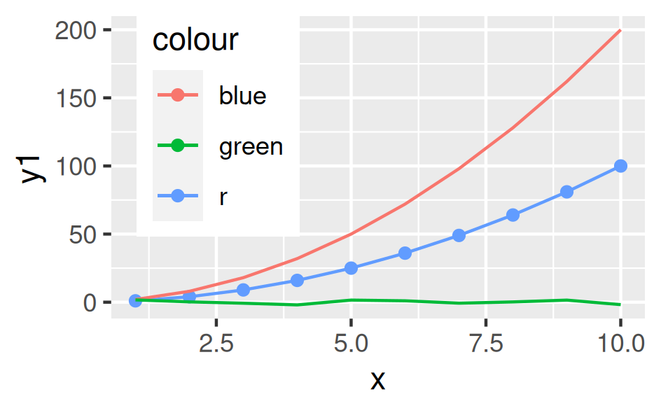

Basic Plotting with R and Python
Table of Contents
1. Basic Plotting
In this segment we will experiment with plotting data using programing tools and not just dragging lines on a screen or clicking columns in a spreadsheet. The principal advantage of this approach is that the code becomes the documentation for how to generate a plot. This makes it easy to repeat plots with other data sets or to repeat a plot when we have added to our data collection. We can embed the code in our report and the figure will be generated for us. Never again will we search our computers for a missing image file. In addition, this method makes it easy to alter a figure or plot. If we feel the need to change the background color or font size we can just edit our code and hit enter. The new figure with all our old tweaks appears with the new edits.
Ja : Intro to Plotting Module (i2c4p) from Britt Anderson on Vimeo.
A short intro to the outline of this module on plotting with R and Python.
1.1. Plotting in R: A tale of two approaches
R has two main contenders in the plotting domain: base and ggplot. This topic takes a look at both.
2. Why Both R and Python? Why Can't I Just Pick One?
While it may be theoretically possible to do anything that can be done in one computer language in another (after all Excel is Turing complete) it may be practically easier in one language than another. Thus you want to balance being a jack of all trades, but a master of none, with expertise that runs deep, but is narrow. My experience has been that knowing the basics of a few languages is better when you are trying to stitch something together. You can pull what is good from each and glue them together. You take pieces that are robust and have been well vetted and use your own glue code to create the pipeline for your one off or urgent need. However, for something that you will be using in the long term, or where you contemplate sharing with others, it may be better to dig deep and learn some of the specialist's knowledge in one particular programming language. This is another example of making your tools appropriate to your task. A jack-knife is handy to have, you can do almost anything with it, but it is rarely the best tool for any job (I think the source for this is John Tukey).
This analogy is particulary apt when it comes to plotting. While I expect the situation to evolve substantially in the next couple of years (it has greatly over the last few) plotting and data handling are currently easier, more stable, and better documented in R. Thus, even if you gather experimental data from a psychology experiment programmed in python you will often find it more convenient to explore that data in an R environment. But it is good to know more than one way to do things, and to have your own experience for comparison. Here we will generate similar plots with both R and Python for you to draw your own conclusions.
3. R
3.1. Libraries for Plotting
Plotting in R is not one thing. There are at least three plotting libraries you could choose from in R, and two are very common. Base plot and ggplot are the two most common. They can do similar things, but the libraries authors took very different design approaches. With base you build up your plot line by line, entry by entry. With ggplot you create a description of your plot. It is easier to get nice plots quickly with ggplot. It is easier to tweak a plot to perfection in base. These are my personal opinions and I find that different users feel comfortable in the different libraries. You should try both and draw your own conclusions.
3.2. A first taste of plotting in R
First, make some pseudo-data. We can use the random number generators of R to supply us some data for plotting.1
xs <- 1:10 ysquare <- xs^2 ydouble <- 2*ysquare yrandom <- rnorm(10) mapply(function (x,y,z,q) {c(x,y,z,q)}, xs, ysquare, ydouble, yrandom)
[,1] [,2] [,3] [,4] [,5] [,6] [,7] [1,] 1.0000000 2.00000000 3.0000000 4.0000000 5.000 6.0000000 7.0000000 [2,] 1.0000000 4.00000000 9.0000000 16.0000000 25.000 36.0000000 49.0000000 [3,] 2.0000000 8.00000000 18.0000000 32.0000000 50.000 72.0000000 98.0000000 [4,] 0.3516467 0.08102127 -0.7312347 -0.6682148 -1.983 -0.2623215 0.1662537 [,8] [,9] [,10] [1,] 8.000000 9.00000000 10.00000 [2,] 64.000000 81.00000000 100.00000 [3,] 128.000000 162.00000000 200.00000 [4,] -1.328868 -0.04187366 -1.70868
We use R's assignment operator to create a sequence from 1 to 10 for our x values and then create three different y values as deterministic or random values. Then I use a map to apply a function to four arguments to create a tuple with elements from each list. This map takes a function as the first argument. That is, functions can be "data". This function is anonymous. The use of anonymous functions and map's is advanced, so just note the potential power of being able to zip four lists together pretty easily, and worry about whether you can do that later in the course.
3.2.1. Base Plot
Jb : Using Base Plot in R (i2c4p) from Britt Anderson on Vimeo.
One of three main plotting frameworks in R, the base plot package comes ready to use with a base R installation.
For base plot two primitive commands are plot and lines. Be careful. There is a command line (no 's'). That is not what you will want here.
plot(xs,ydouble)

3.2.2. Changing the look of base plot
Jc : Editing the Aesthetics of a Base R Plot (i2c4p) from Britt Anderson on Vimeo.
Once you have a base R scatter plot how might you go about changing its appearance?
You have multiple hidden arguments you can use to change the look of the plot such as the symbols, whether it plots lines or dots, the color, the font size. Always remember to try the help command. Here is just one example. Help is your friend here. Try help(plot) in your R console.
plot(xs,ysquare,type = 'b', frame = F, pch = 19, col = "red" , ylab = "y", lty = 1, lwd = 3)
How would you include another data series in this plot?
plot(xs,ysquare,type = 'b', frame = F, pch = 19, col = "red" , ylab = "y", lty = 1, lwd = 3) lines(xs,ydouble, pch = 18, col = "blue", type = "b" , lty = 2, lwd = 1) lines(xs,yrandom, pch = 17, col = "green" , type = "l", lty=3, lwd = 4) legend("topleft", legend = c("Line 1", "Line 2", "Line 3"), col = c("red","blue","green"), lty = 1:3, cex = 0.8)

To figure out what the lines are doing don't forget the help commands: ?lines.
Who wants to try and recreate this in Excel or SPSS? As a quick test can you change the color and line type of each series?
3.2.3. ggplot
Jd : GGplot in R (i2c4p) from Britt Anderson on Vimeo.
The second main plotting framework for R (ggplot2) offers a different graphical model, but some very nice out of the box aesthetics.
ggplot uses a model where you build things up bit by bit all in one line, and you can keep adding to the same object. For instance.
Note that people tend to say "ggplot", but they always mean ggplot2. Note the number "2". If you do not have ggplot you will need to install it, and when you do you will note that ggplot requires a lot of other packages to function properly. One reason to prefer the base package is a greater simplicity of installation. However, once you move on beyond simple 2d line and scatter plots base plotting too grows more complex.
library(ggplot2) p <- ggplot(data = data.frame("x" = xs, "y1" = ysquare, "y2" = ydouble, "y3" = yrandom), aes(x = xs, y = ysquare, col= 'r')) p <- p + geom_point() + geom_line() + theme(legend.position = c(0.2,0.65)) + geom_line(aes(x=x,y=ydouble, col = "blue")) + geom_line(aes(y=yrandom,col = "green")) ggsave("ggplot1.png", width = 8, height = 5, units = "cm")

Notice that here we are saving the results of our calls to ggplot as a variable. We can either type that variable at the command line to see the plot, or we can use that variable to save our plot as a file. The style is quite different from the base plot above, and can be a bit harder to begin with. We are creating an object. Initially, in the line above where we first use ggplot we don't actually plot anything. We just create our plotting object and populate the data. Later on we use a method to plot this data with a particular syle, the point, and then again with the line.
3.3. Practice makes perfect
To get some hands on experience with plotting I suggest creating scatter plots and box plots with R using one of the built in data sets.
- Using the R data set
mtcarscreate in both base plot and ggplot a scatterplot of mpg and wt. What would you expect this to show even before you plot it. One way to make sure your code is doing what you want is to visualize what you expect. If that is not what you see then either your code is wrong or your understanding of the functions and what they do is wrong. Either way you know something is not right and you can set about fixing it. - Using the R data set
ToothGrowthgenerate boxplots forlenanddose. If you are feeling creative overlay the data points on top of the box plot. Here are a couple of links to help you get started:
3.3.1. Lattice (the third, very powerful, plotting alternative for R)
When should you consider using lattice? When multivariate data are at play. One of the good examples of this that comes up often in psychology is the interaction plot. For analyses of variance you frequently encounter pairs of factors, say age and weight, that you want to plot against each other, and where you want to separate out the effect of a third factor on that relationship (e.g. gender).
4. Python
Je : Plotting with Python (i2c4p) from Britt Anderson on Vimeo.
Matplotlib is the workhorse plotting library for python. Yet another different approach to plotting from those in R it can produce graphics of equally high quality.
Python has many plotting libraries too. Matplotlib is very popular and the most well established. It is leveraged by the Pandas package to make plotting available from Pandas. Other plotting libraries worth checking out are Seaborn and Bokeh. Bokeh seeks to use the same graphics grammar as ggplot. Lastly, Plotly has become popular and can make interactive plots as well.
4.1. Interaction Plots
This example is included because SPSS, a common and powerful statistical package used by many psychologists, makes interaction plots difficult to achieve (or so I am told - I have never used SPSS). If you are taking an advanced statistics course knowing how to create these kinds of plots could be very useful.
4.2. Getting the data
For this example we will use the data from http://personality-project.org/r/datasets/heating.txt, but you don't need to download it manually. We can do this from within python itself. Instead of using the request library (a general library in python for making internet requests) we will use the read_csv functionality of pandas to read data from a url (universal resource locator - an address on the world wide web). 2
4.3. Pandas Read in Text
import os os.chdir(".")
The above code block is a little bit of housekeeping to make sure it is easy for me to embed the plots. It is not too important here, but I wanted to leave it visible in case you run into problems.
import pandas as pd url = "http://personality-project.org/r/datasets/heating.txt" d = pd.read_csv(url, sep="\t") d.columns
For this exercise, we want to get plots of degree days versus therms, but we want to do it separately for each type of house to see if there is an interaction. That is, is the relationship between degree days and therms different for the different types of houses. Types of houses interacts with degreedays when we want to predict therms.
We will also use some additional python modules to help us make this easier, specifically scipy, matplotlib, and statsmodels. These can be installed via pip.
from statsmodels.graphics.factorplots import interaction_plot from matplotlib import pyplot as plt interaction_plot(d['degreedays'], d['Location'], d['therms']) plt.savefig(f) f

This gives us a "connect-the-dots" sort of look to our data. We would prefer to fit a line, a best possible line, to our data. We want to pick the line that runs through the data points and is as close as possible (measured in the y direction) to all the data points. The techniques for doing this, and the theory, come from your stats courses, but we can use those tools here without explanation just to get some practice with the libraries and functions that will later come in handy.
from statsmodels.formula.api import ols ols_d = ols(formula="therms ~ degreedays * Location", data=d) my_fits = ols_d.fit() plt.clf() f = plt.figure() a = f.gca() ip1 = interaction_plot(d['degreedays'], d['Location'], my_fits.fittedvalues, plottype="line", ax=a) ip2 = interaction_plot(d['degreedays'], d['Location'], d['therms'], plottype='scatter', ax=a) lines, labels = f.axes[0].get_legend_handles_labels() a.legend_ = None f.legend(lines[0:3], labels[0:3], loc='upper left', bbox_to_anchor=(0.15, 0.85)) plt.savefig(fn) fn

Note that figuring out how to get the legend only for the plot with the lines and not a redundant legend for the scatterplot, and to place it properly took me about an hour. This is not as easy a system to get started in as the R commands are.
5. Assessment
Words of warning: do not think you can just cut and paste the R commands with the Python commands and vice versa. You will need to look up how to do the things in python that we do in R and vice versa by consulting online sources. In some cases the easy thing in R is hard in python and vice versa.
6. Plotting Assessment: R and Python
6.1. Task
- Do exactly what we did in the topic, but reverse which language you use to do each.
- Use python functions to generate a sequence (for the x), a function to get a y from the x, and a random number generator to get yrandoms as long as the x and y values, and then generate a line and scatter plot for your x and y's and yrandom's all on the same plot.
- The interaction plot should be done with R
6.2. What to submit
An *.org file that includes code blocks for the plots (and the included files for the plots) that accomplish the assigned tasks. It should export to a nice html.
6.3. Hints
- R can read in data from a url as well as pandas. See thisstack overflow question/answer.
- R has a built in function for interaction plots that might work.
- It might be easier with
ggplot. Here is a blog showing how. - Random numbers are easy in python.
- What you need for plotting lines in python is shown in the interaction plot example - just skip the "ols" model part.
Footnotes:
The course notes are being generated from org mode files using babel source code blocks. Getting these blocks right can be tricky and may involve language specific adjustments. Please consult the org files for details on the header fields, their keywords, and how I use them to change the outputs. Note specifically that the colons are extremely important. The directory you set up to work in may also need to be changed if you recompile these notes locally.
Notice that in this file we will execute both R code and Python code mixed with text. We will run separate sessions of R and python that allow us to mix and share variables within the code blocks for each language.